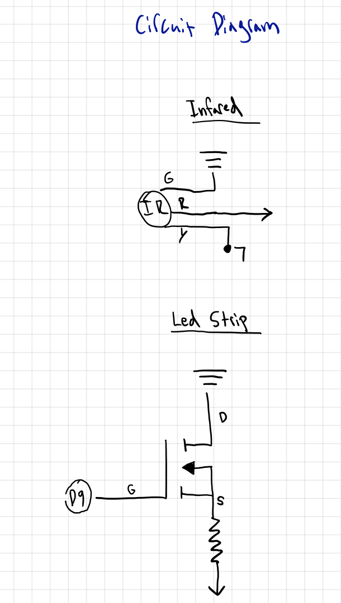
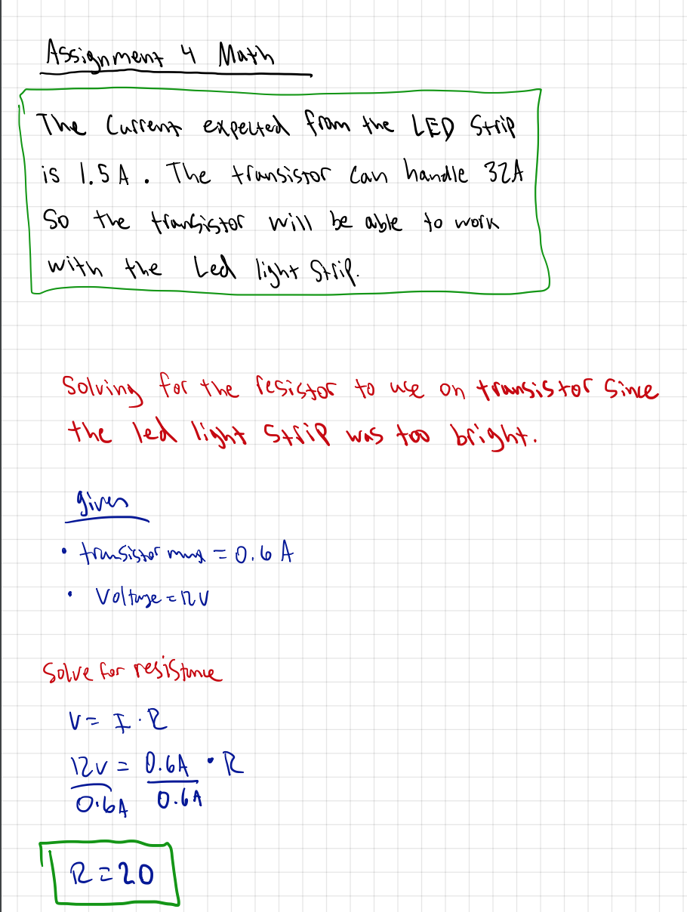
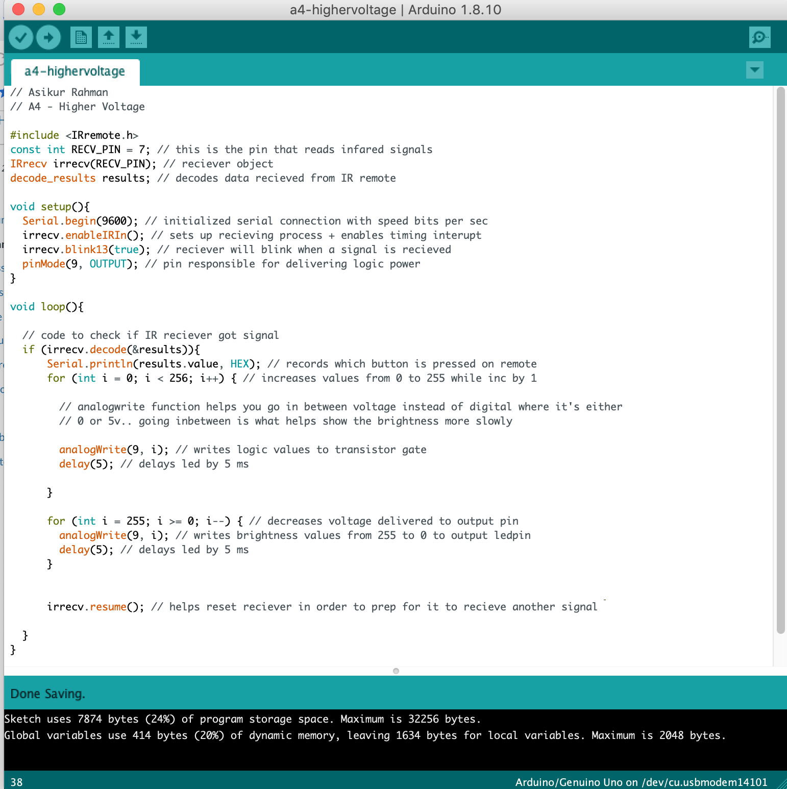
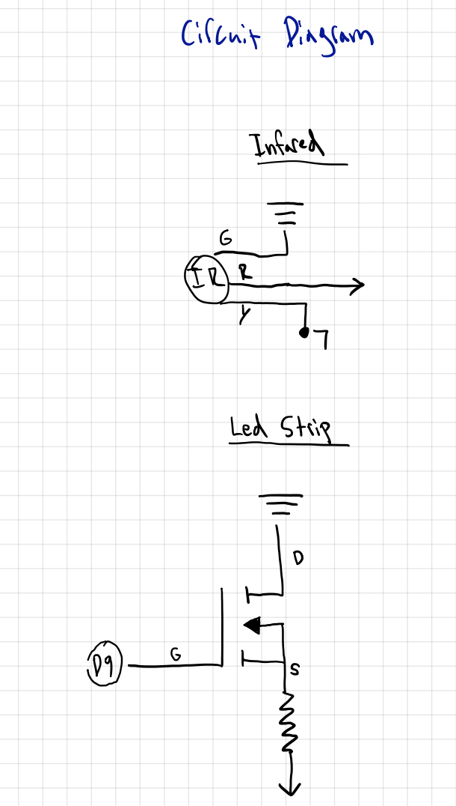
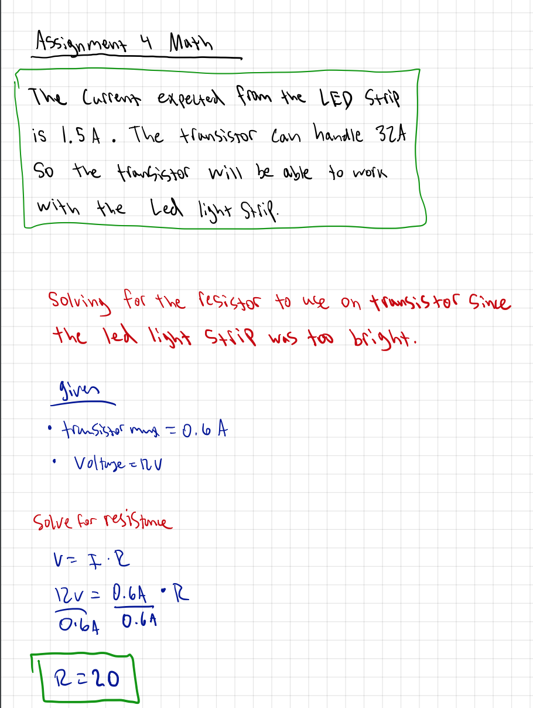
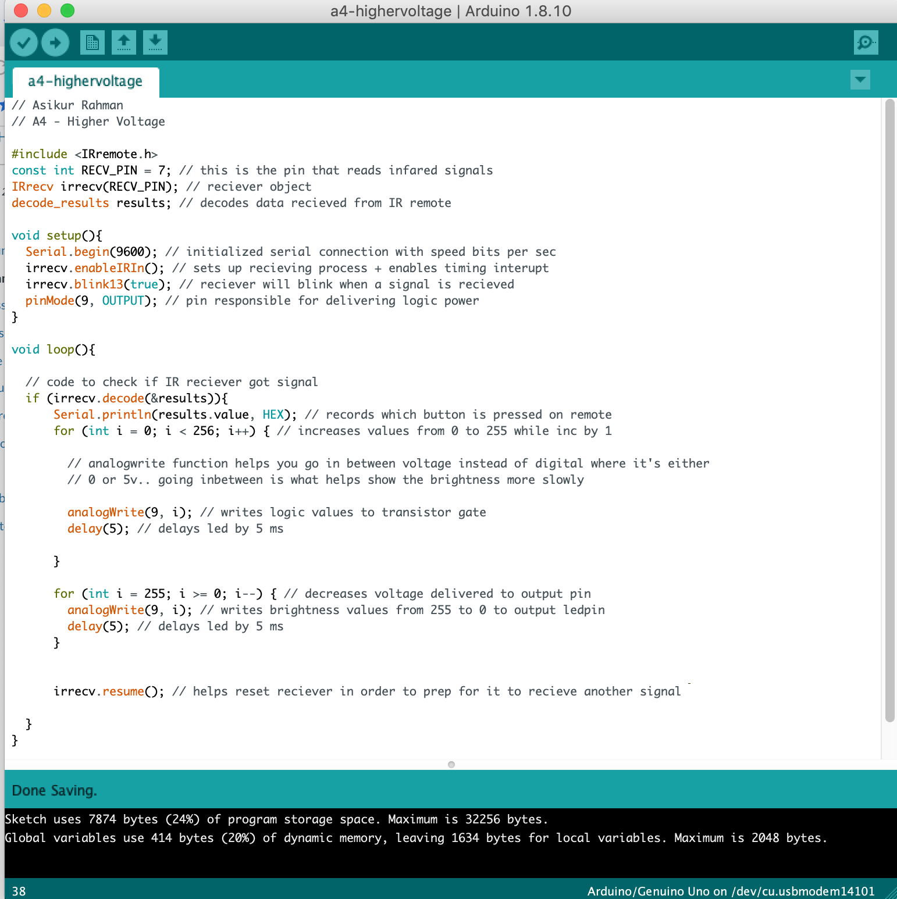

Assignment 4: Higher voltage!
Instructions: You will create a schematic, circuit, and code that uses a transistor to control load power separate from logic power. You have to use analogWrite(), a high-load output device, and an input sensor that uses a library. Document your project on your webpage.
Circuit Demo: This is a gif showing the circuit operations when assembled
Circuit Diagram:
This is a gif showing the circuit operations when assembled
Circuit Diagram:
 Schematic:

This is a schematic of my circuit.
Calculations:

Code Snippet:

Schematic:

This is a schematic of my circuit.
Calculations:

Code Snippet:
